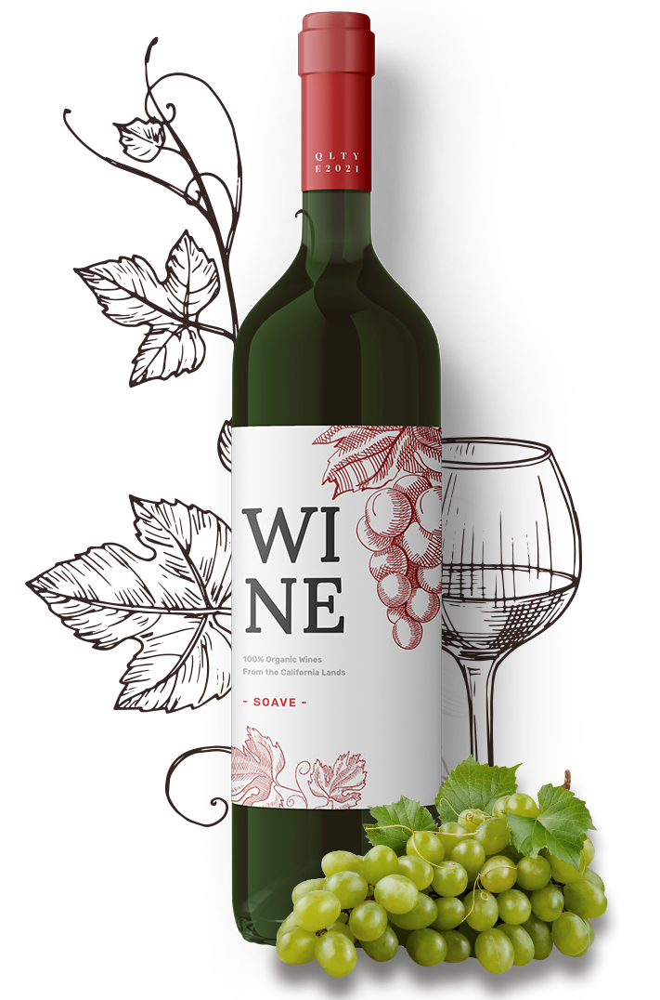

100% natural
What Makes Our Wines Special

We use only 100% natural grapes, no impurities.

Amazing Taste
———
We make wine from selected grapes of the best varieties.
Naturalness
———
In the production of wine, we use only natural ingredients.
Ecological Safety
———
Grapes for wine production are grown in an ecologically clean place.
Natural Fermentation
———
We do not add alcohol or any additives to increase ABV.
Wine Aging
———
Before bottling, the wine is aged in special oak barrels.
Classic Varieties
———
From Chardonnay to Syrah, we offer classic wines that everyone likes.